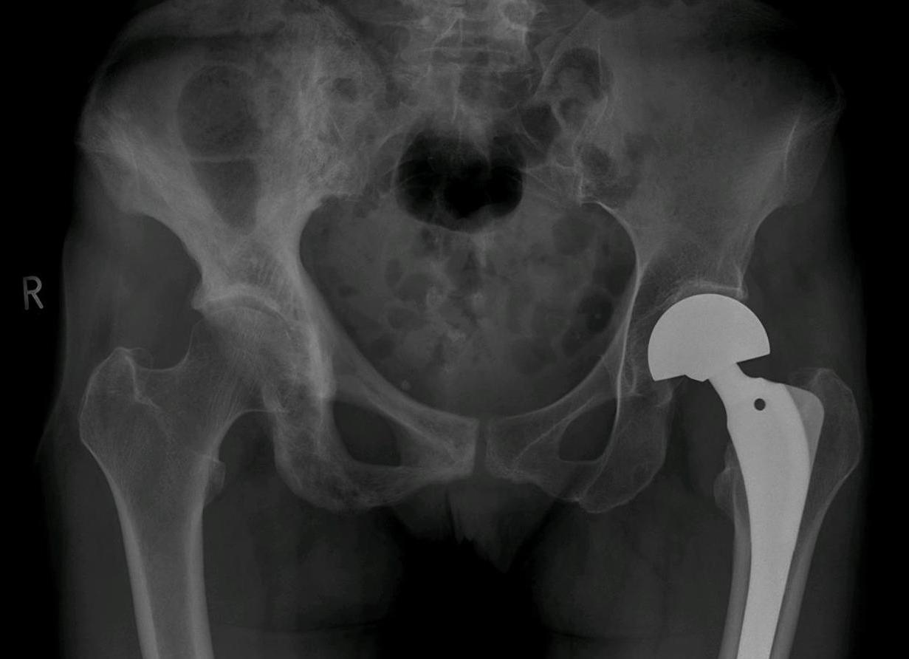

Ficha del catálogo
Enfermedad ósea de Paget
- Sistema
- Óseo
- Modalidad
- RX
- Región
- Pelvis, cráneo y huesos largos
- Dificultad
- Avanzado
Trastorno del remodelado óseo en el que la resorción y la formación se aceleran de forma desordenada, produciendo hueso engrosado pero mecánicamente débil. Afecta a adultos mayores y con frecuencia se descubre de manera casual o por elevación de la fosfatasa alcalina. La pelvis, el cráneo, el fémur y la columna son las localizaciones más habituales.
Técnica
Radiografía simple en dos proyecciones del hueso afectado, que suele ser diagnóstica por la combinación de engrosamiento cortical y agrandamiento óseo.
Qué observar
- Engrosamiento de la cortical y de las trabéculas con aumento del tamaño del hueso
- Fase lítica inicial con un frente de resorción en forma de llama en huesos largos
- Engrosamiento de la línea iliopectínea en la pelvis
- Áreas de esclerosis algodonosa en la bóveda craneal
- Deformidad en arco de tibia y fémur por la debilidad mecánica
- Fracturas incompletas transversales en la cortical convexa
Hallazgos
Hueso aumentado de tamaño con corticales engrosadas, trabéculas groseras y áreas mixtas líticas y escleróticas.
Perlas
El agrandamiento del hueso es lo que distingue Paget de una metástasis blástica: Las metástasis no aumentan el tamaño ni engrosan la cortical. El dolor nuevo y persistente en un hueso pagético obliga a descartar transformación sarcomatosa.
Diagnóstico diferencial
- Metástasis blásticas
- No agrandan el hueso ni engrosan la cortical.
- Displasia fibrosa
- Matriz en vidrio esmerilado en pacientes más jóvenes.
- Osteopetrosis
- Esclerosis difusa simétrica y generalizada de todo el esqueleto.
Simuladores
- Cambios degenerativos escleróticos
- Osteomielitis crónica esclerosante
- Linfoma óseo esclerosante
Por modalidad
- RX
- Habitualmente diagnóstica
- TC
- Detalla la estructura trabecular y las fracturas
- RM
- Valora complicaciones como estenosis de canal o degeneración sarcomatosa
Protocolo
Radiografía dirigida al hueso sintomático. Estudio seccional ante dolor nuevo, masa palpable o sospecha de complicación.
Clasificación
Se describen fases lítica, mixta y esclerótica, que pueden coexistir en distintos huesos del mismo paciente.
Errores frecuentes
- Confundir la fase esclerótica con metástasis sin valorar el tamaño del hueso
- No investigar el dolor de nueva aparición sobre hueso pagético
- Atribuir a Paget cualquier esclerosis focal sin criterios de remodelado

paget remodelado oseo engrosamiento cortical pelvis craneo fosfatasa alcalina